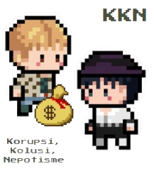

Pengertian
Demokrasi Pancasila adalah sebuah konsep demokrasi, yang merujuk pada sistem negara Indonesia (Politik, Ekonomi, dst) menjalankan demokrasi yang dilandaskan pada nilai-nilai Pancasila (dasar negara Indonesia) dan menjunjung tinggi asas kekeluargaan serta gotong royong. Semua sila dalam Pancasila memiliki kedudukan yang sama dan setara. Sehingga, keterkaitan antara silanya menjadi satu kesatuan membentuk demokrasi.
Pancasila adalah dasar negara Indonesia yang terdiri dari lima sila, yaitu Ketuhanan Yang Maha Esa, Kemanusiaan yang Adil dan Beradab, Persatuan Indonesia, Kerakyatan yang Dipimpin oleh Hikmat Kebijaksanaan dalam Permusyawaratan/Perwakilan, dan Keadilan Sosial bagi Seluruh Rakyat Indonesia. Demokrasi Pancasila. Nilai-nilai Pancasila tersebut diintegrasikan ke dalam pelaksanaan demokrasi Pancasila.
Dalam konteks Demokrasi Pancasila, kedaulatan rakyat adalah prinsip utama yang dijunjung tinggi (dari, oleh, untuk rakyat, kekuatan terbesar ada di tangan rakyat). Pemerintahan dilaksanakan secara murni dan konsekuen berdasarkan Pancasila dan UUD 1945 dengan memberantas paham komunis di Indonesia.

|
Penerapan Demokrasi Pancasila
Penerapan Demokrasi Pancasila dalam kehidupan sehari-hari dapat dilakukan sebagai bentuk upaya agar tidak terjadi perpecahan yang dapat merugikan negara. Berikut adalah beberapa diantaranya…
- Pemilihan Umum
Pemilihan umum yang demokratis adalah salah satu aspek penting demokrasi. Pemilihan umum di Indonesia dilakukan secara berkala untuk memilih anggota parlemen, presiden, gubernur, bupati/walikota, dan tingkat pemerintahan daerah lainnya. Pemilihan umum merupakan sarana agar rakyat dapat berpartisipasi dalam proses politik dan penentuan pemimpin mereka.
- Sistem Ketatanegaraan
Sistem politik dan ketatanegaraan Indonesia tentunya didasarkan pada prinsip Demokrasi Pancasila. Negara Indonesia merupakan negara demokrasi yang berdasarkan atas kedaulatan rakyat dan Pancasila. Pemerintahan dijalankan berdasarkan prinsip pembagian kekuasaan antara lembaga legislatif, eksekutif, dan yudikatif, prinsip-prinsip Pancasila juga tercermin dalam undang-undang dan kebijakan negara.
- Partai Politik
Partai politik di Indonesia diatur oleh undang-undang dan berperan dalam mempengaruhi kebijakan publik, mengusulkan calon-calon pemimpin, serta menjadi wadah partisipasi politik bagi warga negara. Partai politik diharapkan dapat mencerminkan, sekaligus mempromosikan dan menerapkan nilai-nilai Pancasila dalam kegiatan politik mereka.
- Mekanisme Konsultasi Publik
Demokrasi Pancasila mendorong partisipasi aktif masyarakat dalam pengambilan keputusan, entah lewat musyawarah mufakat, forum diskusi, rapat, dst . Kegiatan-kegiatan tersebut diadakan untuk menghimpun pendapat dan aspirasi orang banyak dalam mengatasi berbagai isu kebijakan publik. Hal ini bertujuan agar di akhir hari dapat diperoleh solusi terbaik atau paling sesuai untuk banyak pihak. Dengan begitu, warga negara dapat lebih aktif berkontribusi dalam proses pengambilan keputusan secara lebih inklusif dan adil.
- Perlindungan Hak Asasi Manusia (HAM)
Demokrasi Pancasila di Indonesia sangat menekankan terkait pentingnya perlindungan Hak Asasi Manusia (HAM). Salah satu tujuan keberadaan undang-undang dan lembaga terkait adalah untuk menegakkan dan mempromosikan hak asasi manusia di Indonesia. Prinsip keadilan sosial bagi seluruh rakyat Indonesia yang terdapat dalam Pancasila menegaskan pentingnya menghormati dan melindungi hak-hak dasar setiap individu, dan hak-hak mendasar itu tentunya harus kita jaga bersama.
|
|
Permulaan Demokrasi Pancasila dikatakan sebagai hasil dari reaksi penolakan keras terhadap Demokrasi Terpimpin di bawah pemerintahan Presiden Sukarno. Pengaruh Sukarno dan Orde Lama mulai meluruh usai peristiwa G30S 1965. Pada era Orde Baru, Demokrasi Terpimpin mendapat penolakan keras, karena dianggap tidak sesuai dengan nilai Pancasila.
Demokrasi Pancasila dimulai sejak Soeharto mengeluarkan Surat Perintah Sebelas Maret (Supersemar) pada 1966, yang memberikan kewenangan padanya untuk mengambil alih kekuasaan Soekarno. Soeharto yang kemudian menjadi Presiden RI setelah Sukarno, dalam pidato kenegaraan tanggal 16 Agustus 1967 menyatakan bahwa Demokrasi Pancasila berarti demokrasi kedaulatan rakyat yang dijiwai dan diintegrasikan dengan sila-sila Pancasila.
Ada beberapa perubahan positif yang terjadi selama masa Orde baru, diantaranya adalah… :
- Pengeluaran kebijakan mengenai asas tunggal Pancasila, agar seluruh organisasi masyarakat dan partai politik menggunakan Pancasila sebagai satu-satunya asas.
- Pemerintahan Orde Baru juga menempatkan militer dalam bidang sosial politik. Keterlibatan militer dalam ranah politik, semata- mata untuk menjaga kemurnian Pancasila sebagai dasar Negara Indonesia.
- Pemahaman Pancasila disusun dalam konsep P4 (Pedoman Penghayatan dan Pengamalan Pancasila).
Kendati begitu, dalam penerapannya selama era Orde Baru, Demokrasi Pancasila tidak berjalan sebagaimana yang didambakan. Nyatanya, masih banyak penyimpangan yang terjadi, diantaranya meliputi… :
- Presiden Soeharto memanfaatkan Pancasila untuk melanggengkan kekuasaannya. Bagi Soeharto, setiap kritik terhadap dirinya akan dialihkan menjadi kritik terhadap ideologi Pancasila.
- Tidak adanya rotasi kekuasaan eksekutif, Soeharto berkuasa selama lebih dari 30 tahun.
- Kebebasan pers dibatasi, sejumlah penerbitan media massa diberhentikan karena dianggap anti demokrasi, seperti tempo dan tabloid detik, pembredelan pers selama hampir 2 pekan harus non aktif.
- Hilangnya potensi demokrasi.
- Soeharto juga menjalankan pemerintahan yang represif dan terkesan manipulatif, serta terlalu sentralistik.
- Pemilu yang tidak demokratis, sehingga partai-partai oposisi tidak memiliki kesempatan untuk bersaing
- Presiden Soeharto membentuk Departemen Penerangan sebagai lembaga yang berfungsi mengoreksi berita-berita di media massa agar tidak menjatuhkan pemerintah.
- Penafsiran sepihak terhadap Pancasila lewat program P4.
- Implementasinya sangat menyimpang dari Pancasila. Pancasila ditafsirkan sesuai kepentingan kekuasaan pemerintah Orde Baru dan dijadikan sebagai indoktrinasi oleh Presiden Soeharto guna melanggengkan kekuasaannya.
Cara yang digunakan dalam indoktrinasi Pancasila, sebagai berikut:
- Melalui ajaran di sekolah-sekolah.
- Presiden Soeharto membolehkan rakyat membentuk organisasi-organisasi dengan syarat harus berasaskan Pancasila.
- Presiden Soeharto melarang adanya kritikan-kritikan yang dapat menjatuhkan pemerintahan.
- Terjadi kesenjangan yang sangat kuat antara daerah dengan pusat, dirasa hanya berpusat pada pemerintah saja. Kemudian Presiden Soeharto juga memegang kendali terhadap lembaga eksekutif, legislatif, dan yudikatif sehingga setiap aturan harus sesuai dengan persetujuannya.
- Presiden Soeharto melanggengkan Korupsi, Kolusi, dan Nepotisme (KKN)
- Soeharto diduga melakukan korupsi dalam jumlah besar dan pemberian jabatan-jabatan penting bagi kenalan saja.
- Rekrutmen politik bersifat tertutup, sehingga hanya orang-orang dekat Soeharto yang mendapat posisi penting (Kolusi)
- Pelanggaran HAM, seperti pembunuhan, penangkapan, penyiksaan, dan penghilangan paksa terhadap aktivis, mahasiswa, dan tokoh-tokoh kritis
- Penegakan hukum juga tergolong lemah dan kurang adil
Puncak Penyimpangan, Krisis Moneter
Krisis Moneter adalah puncak penyimpangan terhadap Pancasila pada masa Orde Baru. Terjadinya krisis moneter 1997 yang diduga disebabkan oleh hot money bubble atau gelembung uang panas. Uang panas adalah dana dikelola untung-untungan dan hasil tinggi dalam waktu singkat, dimana semakin besar gelembung, maka semakin banyak dana yang diperlukan.
Kondisi inilah yang membuat perekonomian Indonesia anjlok dan memicu terjadinya protes besar-besaran untuk menggulingkan rezim Orde Baru. Protes tersebut berujung pada peristiwa Kerusuhan Mei 1998.
Pada akhirnya, krisis ekonomi, pelanggaran HAM dan KKN yang menggerogoti Indonesia menyebabkan pergerakan protes massa secara masif pada pertengahan tahun 90-an yang menuntut adanya reformasi. Presiden Soeharto pun mengundurkan diri dari jabatannya pada 21 Mei 1998 dan digantikan oleh wakilnya, BJ Habibie (1998-1999).
Kerusuhan Mei 1998
Penyebab peristiwa yang berlangsung 13-15 Mei 1998 ini sebenarnya adalah krisis finansial Asia atau krisis moneter pada tahun 1997. Kala itu, tepatnya 8 Juli 1997, seperti dilansir Kompas.id (10/5/2021), nilai tukar Rupiah terhadap dollar AS merosot. Hal ini berimbas pada banyaknya perusahaan bangkrut, jutaan orang terkena pemutusan hubungan kerja (PHK), enam belas bank dilikuidasi, dan berbagai proyek besar dihentikan.
Krisis ekonomi kemudian meluas pula hingga ke politik, hingga mulai hilanglah kepercayaan publik terhadap pemerintah. Emosi masyarakat pun semakin tersulut karena 4 kasus tewasnya empat mahasiswa Universitas Trisakti.
Diawali dengan demonstrasi di Jakarta pada akhir April hingga awal Mei 1998. Demonstrasi di ibu kota ini menyusul kerusuhan yang terjadi di Medan, Sumatera Utara. Saat itu, terdapat dua golongan massa yang terlibat dalam aksi. Pertama, gerakan murni intelektual, serta aksi kriminalitas.
Bentuk kerusuhan yang terjadi meliputi pengrusakan, penjarahan, dan pembakaran fasilitas umum, gedung perkantoran, mal, pertokoan, serta kendaraan aparat atau pribadi. Sasaran amukan para pengunjuk rasa adalah keturunan Tionghoa, tetapi lama-lama juga masyarakat pribumi. Tindakan kriminalitas lain turut terjadi, termasuk kekerasan fisik, pelecehan seksual, hingga aksi pemerkosaan massal. Kerusuhan 14 Mei 1998 dianggap sebagai aksi paling rusuh dalam rangkaian peristiwa Mei 1998.
Dampak dari kerusuhan ini mencakup total daerah dan macam aspek yang sangat luas. Dari segi ekonomi, keamanan dan pemerintahan, hingga rasa kemanusian hari itu telah diuji hingga ujung tanduk. Selain itu, kerusuhan ini juga memicu perubahan politik besar-besaran di Indonesia, termasuk transisi ke era reformasi. Pada akhirnya, krisis ekonomi, pelanggaran HAM dan KKN yang menggerogoti Indonesia menyebabkan pergerakan protes massa secara masif pada pertengahan tahun 90-an yang menuntut adanya reformasi. Presiden Soeharto pun mengundurkan diri dari jabatannya pada 21 Mei 1998 dan digantikan oleh wakilnya, BJ Habibie (1998-1999).
|




|